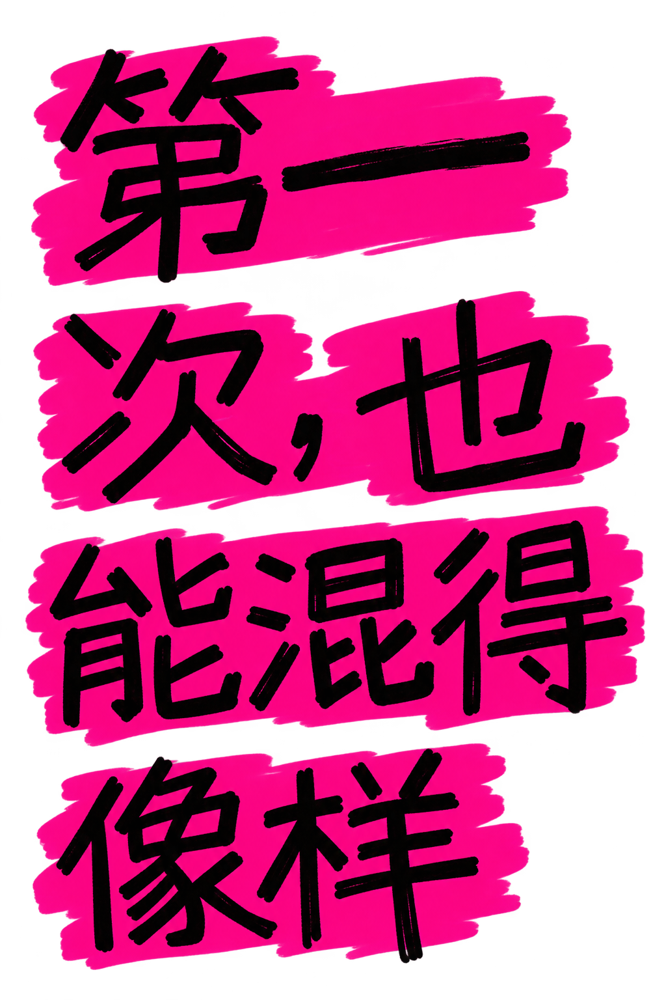

零基础 DJ 混音互动体验
第一次，也能混得像样

YOUR FIRST MIX, DONE RIGHT
零设备，两首歌，90 秒完成第一次转场。
- 网页即开
- 自带练习音乐
- 边听边做
练习FIRST TRANSITION
速度120 BPM
目标A → B
学习路线
0 / 7从声音效果开始
先理解技巧的作用，再到打碟台上自由尝试。
COUNT
等待启动
播放 A
听四拍
同步 B
引入 B
交换低频
收掉 A
完成交接
完成
先让 Deck A 发声
按下 A 的播放键，先听声音。
为什么这样做
先只听一首歌，耳朵更容易找到稳定的拍子。
抓住乐句第一拍
4 拍是 1 小节，4 小节组成 16 拍乐句。在新乐句第一拍进入 B，两个段落才会对齐。
第 1 遍 · 看着学等待播放抓对 0
第一遍看提示，第二遍盲听。
抓到乐句第一拍
继续盲听，也可以进入下一步。
这节拿下
这一步已经完成，可以继续下一节。
HOT CUE
返回技巧玩法CUE播放中按下：返回一个定位点并暂停
HOT CUE每个打击垫保存一个 Cue 点；触发后跳转并继续播放
使用内置曲目《Venus》。播放后，1、2 号打击垫各有一个示范 Cue 点。
4 / 8 BEAT LOOP
返回技巧玩法LOOP点模型上的 LOOP，再按标有 4 或 8 的打击垫；按 OFF 恢复正常播放。
播放内置曲目后，点模型上的 LOOP，再点 4 或 8 打击垫；点 OFF 退出。
FILTER SWEEP
返回技巧玩法FILTER向左削去高频，向右削去低频；回到中间恢复原声。
使用内置曲目《EDM at Midnight》。播放后拖动 FILTER，比较声音的变化。
FIRST MIX准备播放
选择本地音频选择本地音频
横屏获得最佳体验 · 也可以竖屏继续操作
训练音乐
Deck A 雾中脉冲 · 朦胧心跳
ACROSSFADERB
训练音乐
Deck B 回声玻璃 · 漂浮铃音
Sync 会让 Deck B 对齐到 Deck A 当前的节拍位置。
原型正在验证什么
所有声音都由浏览器实时合成。没有上传文件，也没有调用 AI。
- 双 Deck
- 未启动
- 音频状态
- 未初始化
- 采样率
- —
- 输出延迟
- —
我的
本周练习足迹
每一次学习、录制和控制都会落在这里。
- 练习
- 0天
- 作品
- 0段
- 常用
- 120BPM
本月练习记录会出现在完成当天。
打开本周 AI 声音分析
正在检查正在确认 AI 连接与个人作品状态。
本周声音画像听见你的控制
0%唱盘
0%低频
0%混音
动态预览 · 尚未开始解析
等待你的声音
完成个人 Mix 后生成。
做得好
- 等待真实作品
需注意
- 等待真实作品
等待本周判断
使用自己的两首音乐录制后生成。
去练习第一段 Mix，从这里开始
录完后会自动出现在这里，随时回听和下载。
仅保存在当前设备，请及时下载。
FIRST MIX本机作品
MIX PLAYBACK
00:00
Intro
作品从这里开始。
录制 Mix记录打碟台最终输出